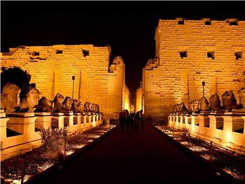
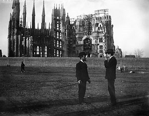

Hypostyle Hall
One famous aspect of Karnak is the Great Hypostyle Hall in the Precinct of Amun-Re, a hall area of 50,000 sq ft (5,000 m2) with 134 massive columns arranged in 16 rows. One hundred and twenty-two of these columns are 10 metres (33 ft) tall, and the other 12 are 21 metres (69 ft) tall with a diameter of over 3 metres (9.8 ft). The architraves on top of these columns are estimated to weigh 70 tons. These architraves may have been lifted to these heights using levers. This would be an extremely time-consuming process and also would require great balance to get to such great heights. A common alternative theory regarding how they were moved is that large ramps were constructed of sand, mud, brick or stone and that the stones were then towed up the ramps. If stone had been used for the ramps, they would have been able to use much less material. The top of the ramps presumably would have employed either wooden tracks or cobblestones for towing the megaliths

History
The history of the Karnak complex is largely the history of Thebes and its changing role in the culture. Religious centers varied by region, and when a new capital of the unified culture was established, the religious centers in that area gained prominence. The city of Thebes does not appear to have been of great significance before the Eleventh Dynasty and previous temple building there would have been relatively small, with shrines being dedicated to the early deities of Thebes, the Earth goddess Mut and Montu. Early building was destroyed by invaders. The earliest known artifact found in the area of the temple is a small, eight-sided column from the Eleventh Dynasty, which mentions Amun-Re. Amun (sometimes called Amen) was long the local tutelary deity of Thebes. He was identified with the ram and the goose. The Egyptian meaning of Amun is "hidden" or the "hidden god"
